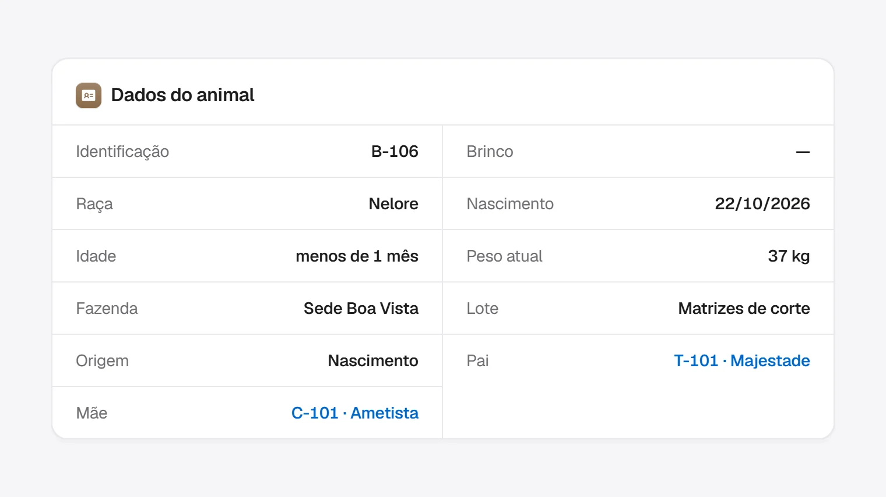
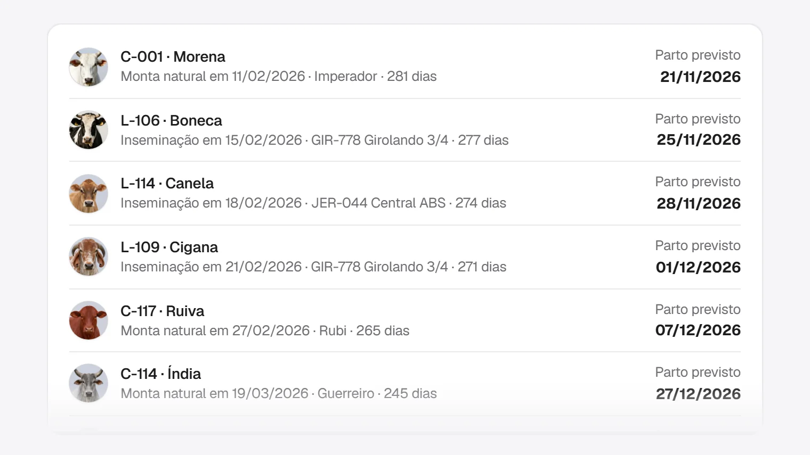
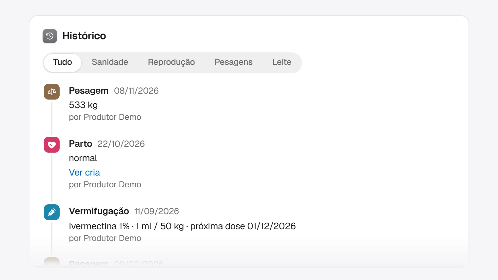
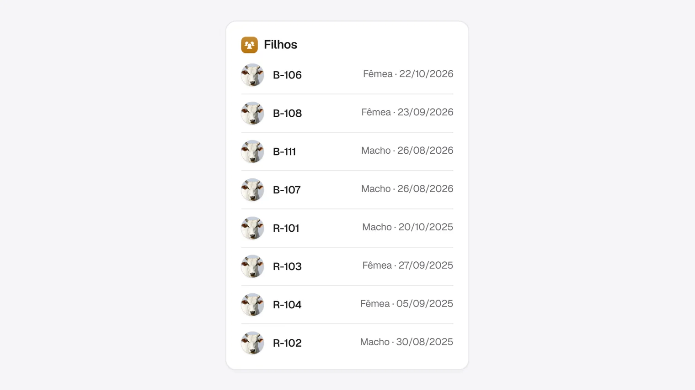
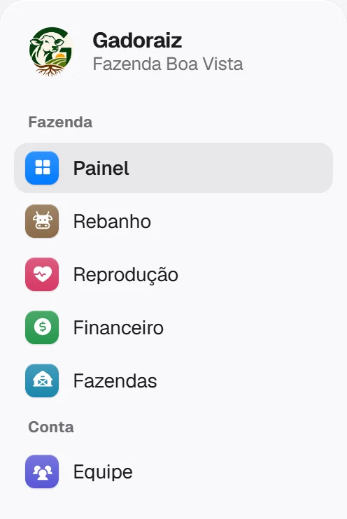

De quem é filha essa bezerra?
Pai e mãe na ficha de cada animal, com um levando ao outro. Se o pai for touro de central ou sêmen comprado, ele fica registrado do mesmo jeito.

O Gadoraiz guarda a genética e a reprodução de cada animal: de quem é filho, qual touro cobriu, quem está prenhe e quando vai parir. No celular, no curral.
Caderno molha, planilha fica velha e o funcionário vai embora levando a memória do rebanho. Cada uma dessas perdas custa bezerro, tempo e dinheiro.
Arraste a régua de cada tela. À esquerda, como costuma ser. À direita, o Gadoraiz de verdade.
Pai e mãe na ficha de cada animal, com um levando ao outro. Se o pai for touro de central ou sêmen comprado, ele fica registrado do mesmo jeito.

Você lança cobertura, diagnóstico e parto. O Gadoraiz separa gestantes, quem aguarda diagnóstico e vazias, e calcula o parto previsto de cada uma.

Cobertura, diagnóstico, parto, vacina, vermífugo e pesagem entram na linha do tempo de cada animal, com quem lançou e quando. Nada se apaga.

A ficha do touro lista todos os filhos, com sexo e nascimento. Na hora de escolher quem cobre quem, a resposta está a um toque.

A genética e a reprodução são o centro. Em volta delas, o dia a dia do rebanho, no navegador do celular e do computador, sem instalar nada.

GenéticaPai e mãe de cada animal, do rebanho ou de central, crias de cada matriz e filhos de cada touro.
ReproduçãoCio, inseminação e IATF, monta, diagnóstico, parto previsto e cria cadastrada no parto.
Rebanho e fichaBovinos e búfalos, com a linha do tempo de cada animal.
SanidadeVacina, vermífugo e tratamento, com aviso de dose a vencer.
Pesagem e leitePeso atual de cada animal e litros por vaca e por turno.
FinanceiroReceitas, despesas com comprovante e custo por lote e por cabeça.
RelatóriosRebanho, reprodução e financeiro para imprimir ou salvar em PDF.
Equipe e fazendasDono e funcionário com acessos próprios; várias fazendas na mesma conta.
Ficou outra dúvida? Pergunte no WhatsApp.
Não. O Gadoraiz abre no navegador do celular e do computador. Cada pessoa da equipe tem o próprio login.
Sim. Com pai, mãe, touro e sêmen registrados em cada animal, o Gadoraiz acompanha a consanguinidade e a DEP do rebanho, para você decidir quem cobre quem.
Serve. O búfalo tem as categorias dele e a gestação de 310 dias no parto previsto.
Ainda não: hoje, para lançar, o celular precisa de sinal. Funcionar off-line no curral é a próxima novidade do Gadoraiz.
Ficam. Cada conta só enxerga os próprios dados, com quantas fazendas e lotes precisar.
O valor sai na conversa pelo WhatsApp, de acordo com o tamanho do seu rebanho.
Numa conversa rápida, mostramos como fica a genética e a reprodução do seu rebanho: corte, leite ou búfalo, inseminação ou monta.
Falar no WhatsApp